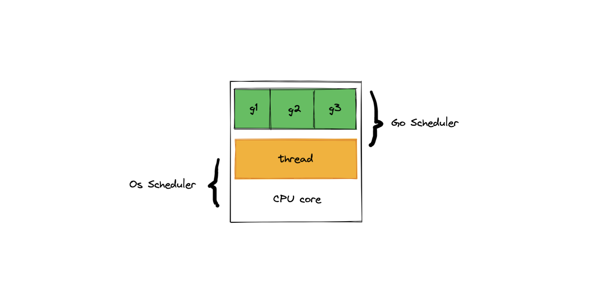
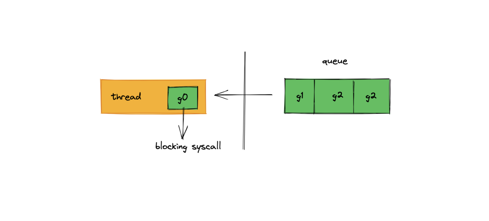
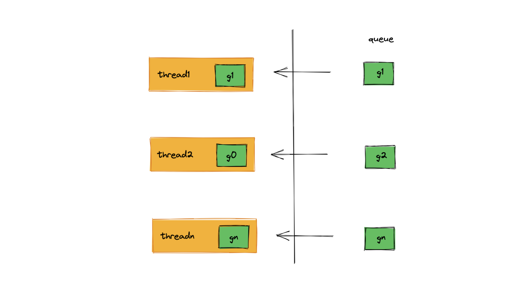
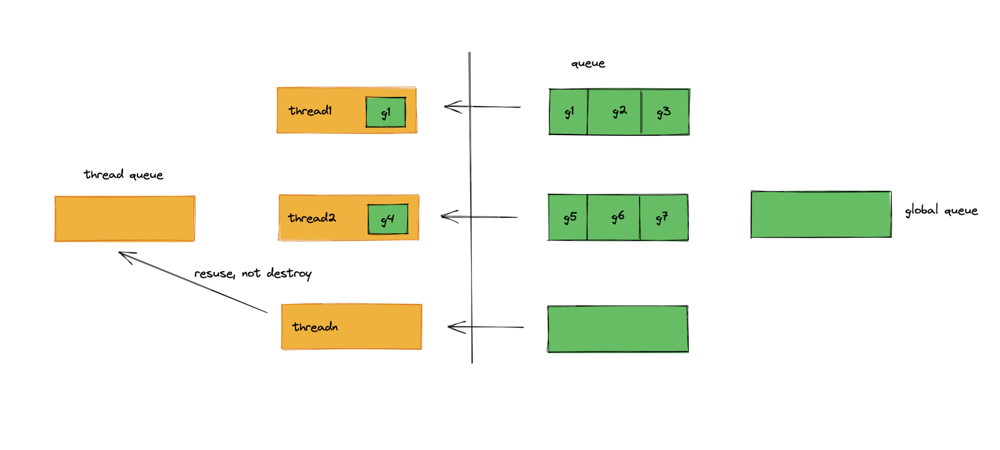

关于调度器的一些思考
在前面 channel 的文章中，我们也花了很大的篇幅来说调度器，调度器是 Go 高效并发的关键。也是 goroutine 和 channel 工具的背后支撑。这篇文章来看一下 Go 调度器的设计思路。
1. 为什么需要调度器
在 Go 中，无法直接使用系统线程，只能使用 goroutine，可以被看做是用户态的线程。相比于操作系统的线程，goroutine 很轻量级，最小的栈空间只需要 2 kb。而且 goroutine 只存在于用户态，所以创建、销毁上下文的切换都会快很多。
goroutine 在被创建之后，不一定可以完整的执行完成，在期间可能会被各种打断，比如 channel 的阻塞，系统调用的阻塞，这些都会打断 goroutine 的执行，为了保证其他的 goroutine 能够顺利的继续执行，就需要有一个机制来协调，在一些 goroutine 被打断执行的时候，能够将系统资源让给其它可以执行的 goroutine。
正因为 goroutine 只在用户态存在，内核感觉不到 goroutine。 线程由操作系统去调度，但没有办法调度 goroutine，所以 Go 必须实现自己的 goroutine 调度器。

Go 语言是为并发而生的，所以调度器需要满足下面这些要求，首先应该只使用少量的系统线程，线程创建和切换的代价太大，如果还需要大量的使用内核线程，那么 gouroutine 就没有存在的的必要。同时要支持高并发，必须同时支持大量的 goroutine 运行，而且 Go 必须可以充分利用现代多核机器的特性，要让所有的 goroutine 均匀分到不同的核心上运行。
2. 怎样实现调度器
在实现调度器时，需要解决的一个核心问题就是，怎么让大量的 goroutine 运行在内核线程上。
在开始实现之前，需要做一些准备工作，在堆上分配一个先进先出（FIFO）队列，用来存放待运行的 goroutine（调度器的实际实现中，会有多个队列来存放待运行的 goroutine）。
我们以下面的这段代码为例，g0 中需要处理一些图片，启动了一些 goroutine 去处理，在 g1 到 gn 中,图片处理完成之后，需要把图片写入磁盘：
// g0
func main() {
for _, i := range images {
go process(i)
}
}
// g1...gn
func process(i image) {
// 写入磁盘，这里会发生系统调用
}
那么接下来有几种思路：
思路一：所有的 goroutine 运行在一个线程上
很明显，这样是行不通的，这样 goroutine 没办法并行，如果有一个 goroutine 发生了阻塞，那么其他的 goroutine 也只能等着。虽然有多个 CPU 核心，也只会用到其中的一个。

思路二：为每一个 goroutine 维护一个线程
这个方案很明显也是行不通的，创建 goroutine 就是为了不重复去创建线程，这样还不如直接用线程。那就只剩下最后一个思路。

思路三：让 goroutine 运行在固定的几个线程上
在创建一些线程之后，让不同的 goroutine 来重用这些线程。确定这个思路之后，那还剩三个问题需要解决：
- 什么时候创建线程
- 创建几个线程合适
- 怎么把 goroutine 分配到线程上运行

创建一个线程的代价很大，所以只在需要的时候才创建线程，当一个 goroutine 需要运行，发现所有的 线程都处在忙碌的时候，就需要去创建一个新的线程。
系统线程不能创建过多，如果创建太多，操作系统层，线程在不断的切换，并发自然上不去，也不能创建太少，太少的话，无法充分利用操作系统的多核特性。而且在这里还有一个很关键的地方就是要重用这些内核线程，如果一个内核线程在执行完一个 goroutinr 之后，不会立马去销毁它，而且把它放到一个队列中维护起来，后续如果有其他的 goroutine 进来之后，就是从这个队列中取出一个线程来运行 goroutine。
这里解决了一个大问题，我们只用了很少的线程，让系统实现了并发。但是这里又出现了一个其他的问题，当我们有上万个 goroutine 需要调度的时候，而且每个 goroutine 中任务都比较耗时的时候，系统就会不断的去创建新的线程，这肯定不是我们想看到的，所以要限制线程的创建，一般认为内核的线程数量与 CPU 的核心数量相等是比较好的选择，如果线程的数量已经与核心数量相等，那么就不会再继续创建新的线程了，而是等到有其他的线程空闲下来再去运行新的 goroutine。
到这里，还会有一个问题，按照上面的设计，所有的 goroutine 都放在一个队列中，这样会有让所有的线程同时去访问这个队列，这样就让并发的效率的降低了很多，因为每次线程来取 goroutin 的时候，都需要加锁。
解决这个问题的方法是每个线程都有一个自己的 goroutine 队列。
到这里，问题都解决了吗？并没有，设想一种情况，有一个线程上的 goroutine 都比较简单，很快就都执行完了，但是另外一个线程上的任务都比较耗时，这样先执行的完的那个线程就空闲下来了。
为了让这个线程不空闲下来，所以它需要去其他的线程上了拿一部分任务过来，它会随机选一个线程，拿走一半的任务，这个机制被称之为 work steal，很形象。
但这还没有到完美，还有一个问题。在上面的示例代码中，我们看到有时候 goroutine 可能会做一些非常耗时的操作，比如写入文件到磁盘。而这个线程的队列中还有很多待执行的 goroutine，这个时候，调度器就会把这个被阻塞的线程的运行队列转移到另一个空闲的线程上。这个机制被称之为 hand off。
在 hand off 机制中，会有一个特殊的后台线程来帮助创建一个新的线程，并且这里可以突破上面那个线程数不能大于核心数的限制，然后把被阻塞线程的运行队列移过来。
在被 hand off 机制处理后的线程，会从阻塞的状态中回来，这个线程上的 goroutine 不会被放回到线程的队列中，而是会放回到一个全局的队列中。当其他线程没有任务的时候，会来这个全局队列中取任务。
当然实际上调度器在设计的时候，细节上还是会有一些差异，但是整体的思路是这样的。
3. 小结
总的来说，调度器的设计有三个关键点：
- 复用线程
- 限制内核线程的数量
- 调度策略采用 work steal 和 handoff 机制
但是目前的调度器也还是存在一些限制，比如，目前的队列都是 FIFO，没办法实现优先级调度，也没有实现抢占策略，但这些目前已经有改进的提案，等待后续的跟进。
文 / Rayjun